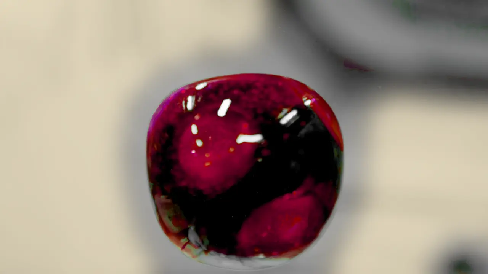
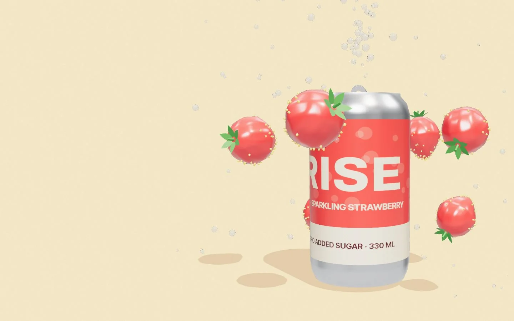

01 / 05Real fruit
Whole
berries
Whole strawberries steep in cold water for a full day. No syrup, no flavouring, nothing pretending to be fruit.

Strawberry water and a lot of bubbles. Scroll, and watch them rise.
Whole strawberries steep in cold water for a full day. No syrup, no flavouring, nothing pretending to be fruit.
Small bubbles that lift the fruit instead of drowning it. You taste the berry first, then the sparkle.
The sweetness is the strawberry's own. Nothing else goes into the can.
Best at four degrees, straight from the can or poured over a glass of ice.

The can, in 3D
Scroll to open a can: whole berries in, fine bubbles out.
In every can
These are specs of a concept drink, not a real product. The page is generated from one config file and one clip of real footage.
Video flow
Real footage of a fizzing ball of water (shot in zero gravity on the space station, recoloured strawberry red), cut into 200 frames and drawn to a canvas as you scroll. Tap a frame to send the bubbles back.
Rise No.3
A concept can for a fictional drinks brand. Nothing is for sale; the fizz is real.
Zyqor Lab concept. Fictional brand, real footage.